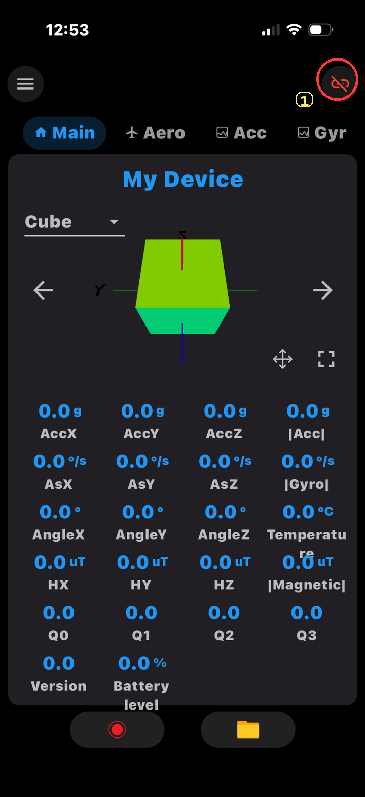
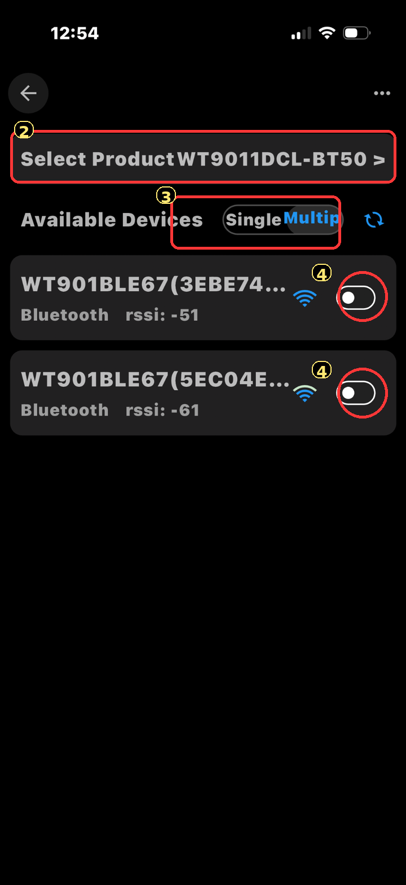
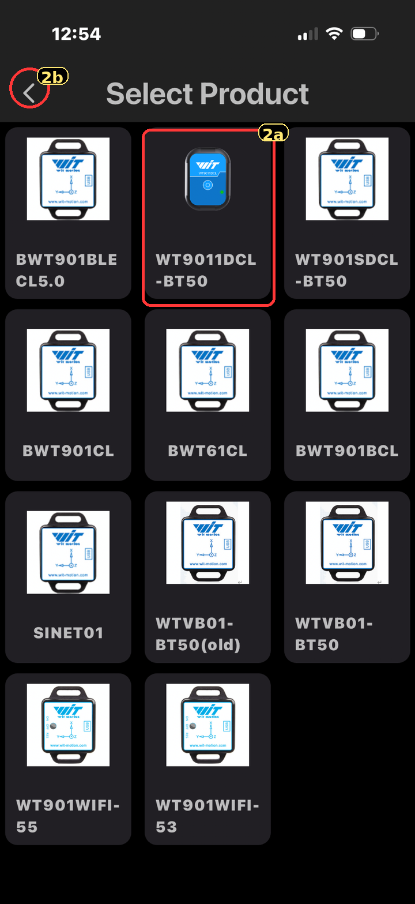
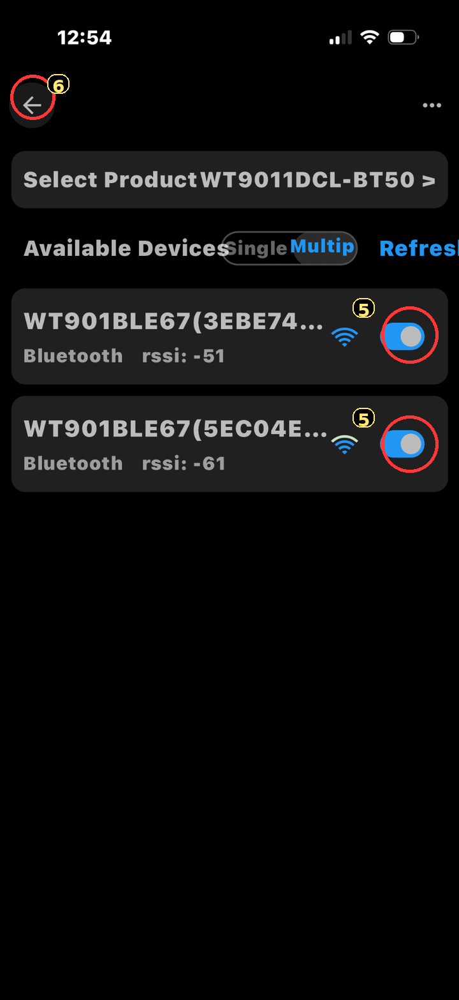
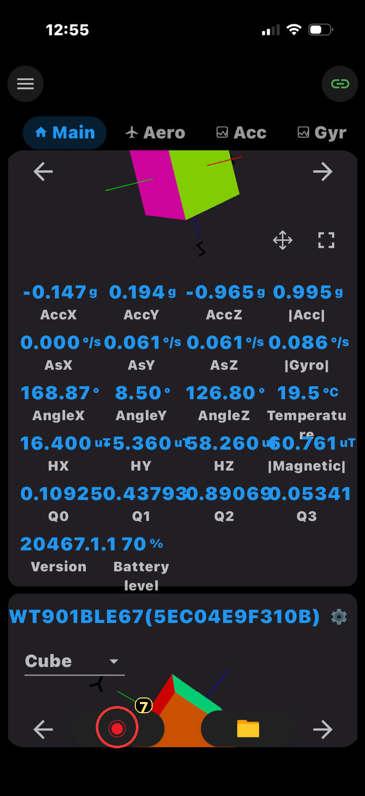
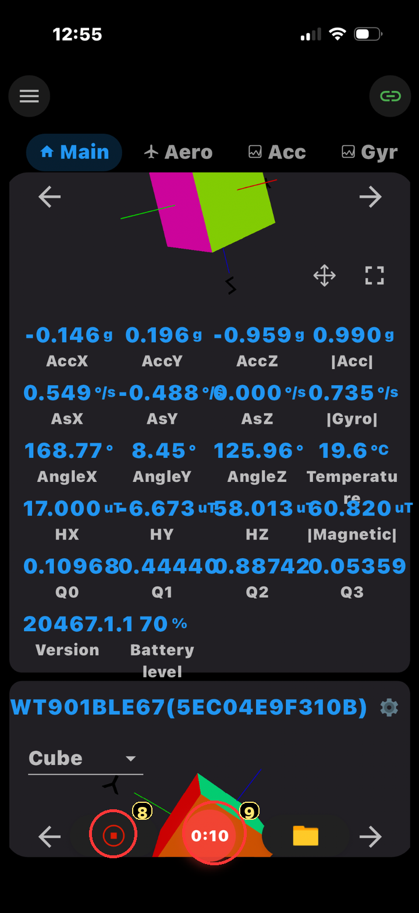
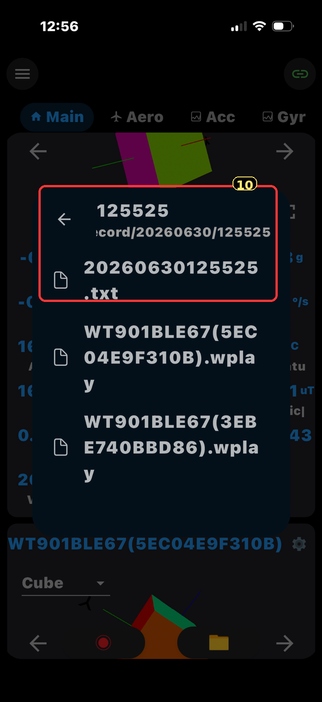
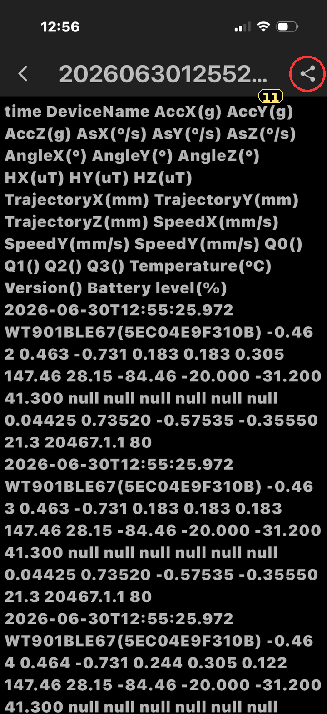

Android · WitMotion oar recording
Align & record on Android
Connect both oar sensors in WitMotion. Make one short alignment recording, then a separate recording of your row. Add a Sensor Logger recording if you also want boat motion and GPS.
1. Connect your two sensors
Charge both sensors and mount them securely in their rowing positions. Keep the same oar, sensor pair, mounting positions and strap tension for alignment and rowing.
- Turn on Bluetooth and grant the Bluetooth/location permissions Android requests.
- Connect inside WitMotion. Use the last 3–4 characters of each sensor address to recognise your pair when other sensors are nearby.
- Set both supported oar sensors to 200 Hz and check that both are streaming.
- Open the connection screen. On WitMotion’s Main screen, tap the chain/link icon near the top right.
- Check the product. Use Select Product… if needed, select your model, then go back. The example screens show WT9011DCL-BT50.
- Connect both sensors. On Available Devices, choose Multip and turn on the switch beside each of your sensors.
- Check live data. Return to Main, gently move the oar and check the changing values for both sensors. Swipe between their cards if necessary.
Connection screens




2. Record four alignment blocks
With both sensors connected, tap the red record circle. Keep one continuous recording running through all four blocks below. Use an open space and keep the blade clear of the water.
Rest still · 10 seconds
Rest the oar on stable supports. Keep both sensors motionless.
Feather and square · 5–6 times
Point the shaft in one direction. Rotate between feathered and square without sweeping or lifting it.
Feathered level sweeps · 5–6 times
Keep the blade feathered and the shaft approximately horizontal. Sweep back and forth through at least 90° without rolling the shaft.
Square level sweeps · 5–6 times
Keep the blade square and the shaft approximately horizontal. Make the same back-and-forth sweeps through at least 90° without feathering.
Pause for a few still seconds between blocks. Do one type of movement at a time. Finish with a few still seconds, then stop and save the recording.
Keep this short TXT clearly named as your alignment recording. Start a new recording for the workout.
When to repeat alignment
Repeat it after moving, rotating or removing a sensor, changing the sensor pair, or changing the oar setup. A saved alignment only applies to the setup used to record it.
Cloud Analysis looks for all four blocks. If a new alignment cannot be fitted, repeat the recording rather than relying on a plausible-looking curve.
Alignment and stiffness are different
Alignment puts the sensor measurements in the same oar reference. Oar stiffness calibration supplies the scale used for moment, work and power. Review your side, boat type and force/bending factor before running the report.
3. Record your row separately
- Check both sensors. Confirm both are connected and showing live values before you start.
- Start the workout recording. Tap the red record circle a few seconds before rowing.
- Keep WitMotion in the foreground. Leave it open with both sensors connected throughout the row. Avoid force-closing the app or disconnecting Bluetooth.
- Stop and save. Tap the square stop button, then the folder icon to find the recording.
Before relying on a full workout, make a short test recording and check the exported TXT contains both sensors and the full recording period.
Start and stop recording screens


Optional: record phone motion & GPS
A phone fixed rigidly to the hull can record boat motion and position while WitMotion records the oar. Use Sensor Logger in the background and keep WitMotion in the foreground.
The phone guide covers the exact sensors to enable, a short background-recording check, the separate-CSV ZIP export, and matching the recording timezone.
Android phone motion & GPS guide →4. Export your TXT files
- Find the date/time folder. Tap the folder icon on Main and open the folder for the recording.
- Select the TXT. Choose the .txt file. The .wplay files are not the main upload files.
- Check both sensors. The DeviceName column should contain both sensor IDs somewhere in the file. Keep the original timestamps, sensor identity, acceleration, gyro and any other exported columns.
- Share the original file. Use the share icon to save it somewhere you can access from the uploader. Do the same for the alignment recording when needed.
No manual column deletion, splitting or conversion is needed. Keep your original recordings as your own copy.
Find and share the TXT screens

.txt file; the .wplay files are not the main upload file.
5. Upload the matching recordings together
- First upload or changed setup: select the short alignment TXT and the larger workout TXT together, or put both in one ZIP.
- With phone data: also select the matching Sensor Logger CSV in Zip File export. Keep one phone recording per workout upload.
- Check before running: confirm the recording timezone, Port/Starboard, Scull/Sweep and force/bending factor in the analysis settings.
After a successful alignment and report, Cloud Analysis can reuse your account’s latest validated alignment for later rows with the same unchanged setup. Leave Use saved alignment enabled when you want that reuse. A newly uploaded alignment takes priority.
If no usable alignment is available, the report identifies that raw sensor axes were used. Review sensor, side or boat-type warnings before comparing results, and upload a new alignment when the setup changes.
Connection and recording troubleshooting
- No sensors: turn them on, bring them close to the phone, refresh the list and check Android Bluetooth/location permissions.
- Only one connects: select Multip and turn on both sensor switches.
- Values stop changing: reconnect and check both sensors before starting a new recording.
- Too many nearby sensors: match the last 3–4 characters of the addresses you noted for your own pair.
- Cannot find a recording: open the date/time folder from WitMotion’s folder icon and share the TXT directly.